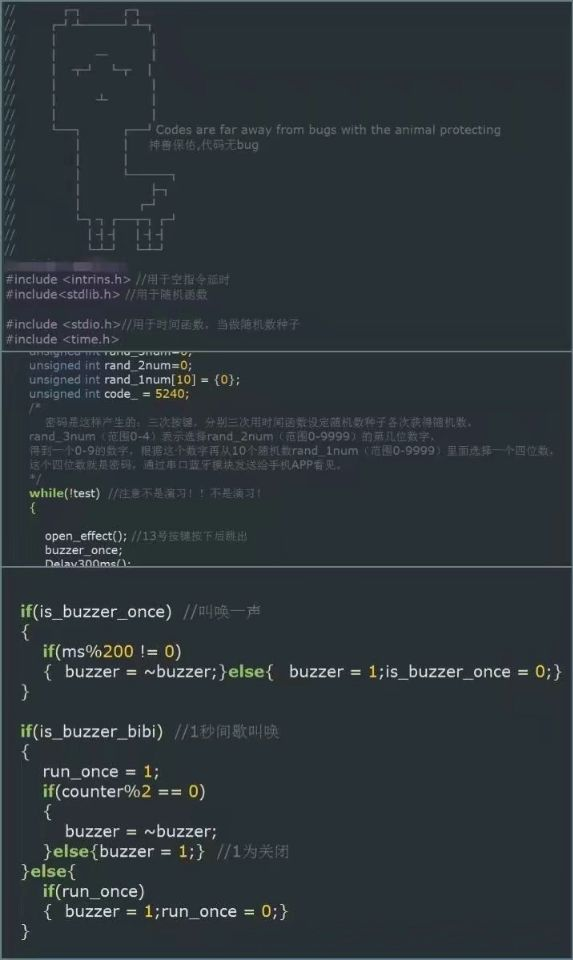

C 编写规范和其他（coding style and more）
p.s 温馨提示：本文推荐下载下来，在 Typora 中阅读，或者在 本文知乎地址 阅读
编辑整理 by Staok，始于 2021.2 且无终稿
本文件是“瞰百易”计划的一部分，为遵循“二向箔”定则而努力着，我做东西致力于与网络上碎片化严重的现象泾渭分明！（这中二魂...）
本文适合刚入门的人阅读和遵守，也适合已经有较多编程经验的人参看。
O 目录
C 编写规范和其他（coding style and more）O 目录1 日常素养2 程序框架要点3 代码格式化工具列举4 普适规则（General rules）5 具体各部分的规范形式关于函数定义形式（Functions）关于变量定义形式（Variables）关于结构体、枚举和类型定义形式（Structures, enumerations, typedefs）关于宏定义和预编译指令定义形式（Macros and preprocessor directives）关于注释的形式（Comments）6 常用宏定义7 C 标准库的使用8 ST HAL 的编写形式9 本文参考源10 大厂规范和名设计模式大厂规范设计定律、原则和模式11 尾记关于软硬件标准化开光保护
1 日常素养
维护干净整洁的编程环境（保持愉悦的心情，干净整洁的桌面，友好和蔼的同事等等）。
身体坐直，按时走走，保证睡眠，计划运动。
要学习或使用新东西，全网搜集到好的手册和资料，就已经成功了一半。
习惯去看源代码（熏陶优秀代码风格，有时还能发现新东西）。
先搞清楚需求，再构思，再开发，顺序不能错。
不要重复造轮子，时常逛开源网站，有新想法可以先去找轮子，也许比自己写的更好，相信前人的智慧和同行们雪亮的眼光。
编译错误，如果不明白哪错了，直接无脑复制编译器的错误信息扔到搜索引擎框，然后点“搜索”按钮（大部分报错都是语法错误）。
关于提问，是一门艺术：
有结对编程，协作开发的能力。
有写文档的习惯（对项目写文档，或者日常写博客，或者没事就画一画流程图梳理想法），条理清晰，简化描述（Keep it stupid simple），并且一定要写上用例，写上例子，写上实例！
做好版本管理，有备份的意识（打压缩包写上时间也好，使用git工具也好，放到U盘里也好，传到私人网盘也好）。
时常看书，时常看看同行的文章，常读常新。
不止技术，不想当将军的士兵不是好士兵（有的人领导能力强，有的人能开发有竞争力的产品，有的人能把知识讲地透彻，有的人理论功底强），时常把视角拉远看一看。
2 程序框架要点
划分好文件、功能函数和所需变量。函数"高内聚，低耦合，可重用，注释全"，变量尽量用结构体打包；可重用意味着直接复制代码或者直接复制文件到另一个项目上直接就用。
做好预编译设置。方便于切换调试版本和执行版本，方便于切换行为模式，方便于剪裁功能块；功能剪裁用一个名字带"_config"的文件集中管理，供用户修改各种剪裁用的宏定义，就像总控台。
关于 MCU 的编写框架，我目前大抵就认我自己的开源项目 "stm32_framework" 的吧，规范都对齐这个项目。
MCU C 的一些规范：
p.s 以下为项目 "stm32_framework" 编写时由经验形成的一部分规范，具体形式以此项目的源码和架构为准！
- 本"C 编写规范"的全部规则都适用。
- 中断优先级分组选用分组4，即16级抢占优先级，不用0级响应优先级。
- IO的低电平为有效电平，高电平截止或者无效；按键IO尽量都使用外部中断。
- 至少用一个定时器提供1ms或者10ms的时基，再用软件分频为 50ms/100ms/300ms/1s 等。
- 外设（Periph）和设备（Devices）分别初始化，外设的启停成对编写，命名统一。
- 等等等等。
3 代码格式化工具列举
p.s 针对较乱的"祖传代码"做初步治疗使用。代码格式化工具还可以把代码中的 tab 符变成四个空格，这样，当代码在不同的编辑器中打开时不会产生格式错误，所以可以用 AStyle 自己定制一份配置文件，在每次码完代码之后顺手运行一下 AStyle 即可。
(@TODO)下面部分条目尚未补全。
(@TODO)查一查astyle配置文件的用法，按照自己的规范形式，写一个配置文件
通用工具 AStyle：
配置文件： c-code-style仓库中的 astyle-code-format.cfg 文件 AStyle官网：AStyle官网 AStyle is a great piece of software that can help with formatting the code based on input configuration. This repository contains
astyle-code-format.cfgfile which can be used withAStylesoftware as command line below.1astyle --options="astyle-code-format.cfg" "input_path/*.c,*.h" "input_path2/*.c,*.h"VS Code：在 VS Code 中搜索软件包即可
MDK：
IAR：
Eclipse：
配置文件： c-code-style仓库中的 eclipse-ext-kr-format.xml Repository contains
eclipse-ext-kr-format.xmlfile that can be used with eclipse-based toolchains to set formatter options. It is based on K&R formatter with modifications to respect above rules. You can import it within eclipse settings,Preferences -> LANGUAGE -> Code Style -> Formattertab.Source Insight：
4 普适规则（General rules）
第一条，请您重视编写规范！可以有代码洁癖。
使用 C99 标准。
一个 tab 四个空格。
运算符前后空一格，给函数传递的多个变量之间在逗号后空一格，下面为例：
x
1for (i = 0; i < 5; ++i) /* i 永远滴神 */2tempNum = 3 + 4;3int32_t tempNum = sys_example_sum(4, 3);4sys_example_func(5, 4);注释里，字母和数字的两边空一格，例如：
x
1/* 用 3 这个数字代替洋文 three 了解了吗 */变量和函数的命名都只用小写（尽量），宏定义使用全大写（尽量），并遵循"属什么 _ 是什么 _ 做什么"的命名形式，如：sys_irq_disable()，属于 sys 级别函数，是 irq 管理，做 dsiable 的功能。
系统外设功能的启用与否均用宏定义 SYSTEM_SUPPORT_XX 来管理剪裁。
RTOS任务函数均使用 os_task_xx_xx() 命名，属于"os_task"。
变量如果是低有效，变量名加尾缀"_n"，比如使能 en 是低有效（en 上面有一横），则命名为"en_n"。
控制语句总加括号（即使一句），括号在竖方向对齐，用 tab 把层次分地清清楚楚，例如：（为了节省空间，下面示例横向写~）
x
1if( ) for (i = 0; i < 5; ++i) do switch (check())2{ { { {3case 0:4}else if( ) } }while( ); fsm_do_a();5{ break;6case 1:7}else fsm_do_b();8{ break;9default:10} break;11}层次分明，多用tab划分层次关系（预编译代码也不例外），例如：
xxxxxxxxxx512345用 if (check_func()) { ... } 代替 if (check_func() == 1)，判断是否为'0'可以用后者的写法（或者用 !check_func()），判断'1'用前者写法。
判断指针是否为空只用"NULL"，即 void* ptr; if (ptr == NULL || ptr != NULL) { ... }。
合理的常用 const 修饰符，防止变量或指针在层层传递过程中被篡改，或者定义函数的时候永远加上 const 修饰符，例：
xxxxxxxxxx81const unsigned char xByte; /* xByte 的内容不能变 */2const char *p; char const *p; /* 二者一样，都是 p 所指向的内容不能变 */3char * const p; /* const 修饰的是 p ， p 不能修改，即地址不能修改，其指向的内容可以修改 */4const void* const p; /* p 所指向的内容和 p 地址本身都不能改变 */5/*6p.s char* c 与 char *c 没有任何区别7signed int 和 unsigned int 区别很大，前者是可以表达正负数的源码，后者是从0开始的正数或是一串参与逻辑运算的二进制8*/对于函数可能传入的参数是不定的任意类型，定义形参用 void* 修饰。
不用变长数组，用内存分配释放函数 malloc() 和 free()。
循环尽量用 for(;;) 替代 while 等，无论有限次循环还是无限次循环，条件循环语句用后者。
长运算语句尽量多的用括号（每一步运算都用括号括起来），并做好空格增加可读性，例如：
xxxxxxxxxx21temp = ( 0x7F << ((xByte - 1) * 8) );2尽量减少数据传输过程中的拷贝。
大块内存使用请用内存管理（自实现的malloc和free）。
返回值 0 表示成功，正数表示失败，此正数可以表示错误代码。
每一个文件在最后留有至少一个空行。
对于 C 语言的文件，其.h文件的主体文件包含在下面的括号之内（标有 "..." 的位置）：
私有变量不要放在.h里面声明，公有变量的声明（加 extern 修饰符）放在.h文件里面以供其他文件调用。
在.c文件中只 #include " .h" 自己对应的.h文件，所有需要 #include 的其他文件均在.h文件里引用。 Every file (header or source) must include license (opening comment includes single asterisk as this must be ignored by doxygen). Use the same license as already used by project/library.
x12345678extern "C"9{10/* __cplusplus */1112...131415}16/* __cplusplus */1718/* TEMPLATE_H */
5 具体各部分的规范形式
关于函数定义形式（Functions）
- 小写；
- 星号*靠近类型名一端；
- 对齐以保持良好阅读性；
- 用" _ "分割语义；
- 命名遵循"属什么 _ 是什么 _ 做什么"的形式。
xxxxxxxxxx61void sys_example_init(void);2const char* sys_string_generate(void);3my_struct_t* sys_example_func(int32_t para1, int32_t para2);4void fsm_state_set(int32_t fsm_ID);5my_type_t fsm_state_get(void);6my_ptr_t* menu_get_current_ptr(void);关于变量定义形式（Variables）
- 同类型的变量声明放在一行，变量定义时避免用函数返回值；
- 小写，星号*靠近类型名一端（除了一行多变量定义的情况），对齐以保持良好阅读性；
- 用" _ "分割语义，命名遵循"属什么 _ 是什么 _ 做什么"的形式；
- 避免使用 stdbool.h 里的"true"或"false"，用"1"或"0"代替；
- 数据类型，除了char float 和 double，都使用 stdint.h 库里面的；
- 合理的常用 const 修饰符，见 "普适规则" 里的具体说明。
xxxxxxxxxx21char* a;2char *p, *n;关于结构体、枚举和类型定义形式（Structures, enumerations, typedefs）
适用 "关于变量定义形式（Variables）"里面的所有内容；
结构体和枚举可以用 typedef 修饰；
结构体里的成员小写，枚举里的所有成员大写；
结构体定义和类型定义后加"_t"；
xxxxxxxxxx121typedef enum {2MY_ENUM_OK = 0,3MY_ENUM_TESTA,4MY_ENUM_TESTB,5}my_enum_t;67struct SIMPLE_struct_t struct /* 只用一次的结构体 */ typedef struct8{ { {9int a; int a; int a;10char b; char b; char b;11double c; double c; double c;12}; }abc; }Simple_struct_t;结构体的实例化尽量用"表格"形式，并在每列头部写好注释，例如：
xxxxxxxxxx141struct fsm_states_struct_t fsm_XXX1_state[XXX1_State_MAX] = /*定义描述名为‘fsm_XXX1’的状态机的状态图*/2{ /*跳转条件都初始化为0*/3/* 状态 执行函数 跳转条件数量 各个条件跳转后的状态（注：根据跳转条件的优先级从高到低往下写）*/4{(unsigned int)XXX1_State_1, fsm_XXX1_state_1_Fun, 2,{ {0,(unsigned int)XXX1_State_5 },5{0,(unsigned int)XXX1_State_2 }, }},67{(unsigned int)XXX1_State_4, fsm_XXX1_state_4_Fun, 1,{ {0,(unsigned int)XXX1_State_5 }, }},8};9/*或者*/10Simple_struct_t simple =11{12.a = 4,13.b = 5,14};函数指针定义（的类型定义）的写法形式如下，函数指针名加后缀"_fn"：
xxxxxxxxxx11typedef uint8_t (*my_func_typedef_fn)(uint8_t p1, const char* p2);
关于宏定义和预编译指令定义形式（Macros and preprocessor directives）
宏定义使用全大写（尽量），并遵循"属什么 _ 是什么 _ 做什么"的命名形式；
尽量把常数数字用宏定义代替；
对宏定义中的所有输入和输出（整个结果语句）用括号保护起来，长句用 do{ }while(0);
xxxxxxxxxx912345/*或者下句更好：*/6/* Backslash indicates statement continues in new line */7(p)->px = (x); \8(p)->py = (y); \9}while(0) /* 2 statements. No semicolon after while loop */预编译指令语句使用tab标识好层次：
xxxxxxxxxx812/* Do when XYZ defined */34/* do when ABC defined */567/* Do when XYZ not defined */8
关于注释的形式（Comments）
注释里尽量写为什么，而不是做了什么。
Doxygen 的注释语法规范和文档产生
Doxygen 注释语法规范：https://www.cnblogs.com/schips/p/12200388.html
C语言中的Doxygen注释模板：https://blog.csdn.net/u013178472/article/details/107164902
Doxygen给C程序生成注释文档：https://www.cnblogs.com/fkpj/p/4537145.html
使用Doxygen软件生成注释文档：https://blog.csdn.net/tuwenqi2013/article/details/70050849
p.s 关于 Doxygen 文档的更多具体写法用时再详看 Documented code allows doxygen to parse and general html/pdf/latex output, thus it is very important to do it properly. 目测目前我见过的用源文件产生手册的大型项目有：LWIP、FreeRTOS、ST HAL、CMSIS等 ST HAL 库里面的注释形式，看文末总结的其编写形式！
下面列举几个我自己"创造"的
函数定义的注释：
xxxxxxxxxx171/*__________函数简述_____________*/2/********************************3*描述：函数详细描述4*参数： 1、第一个形参名 描述52、第二个形参名 描述6...7*返回： 返回值类型 描述8********************************/910/*____________运行错误提示和打印______________________________*/11/********************************12*描述：表示某步骤运行有问题，串口提示，灯提示，声提示13*参数： 1、errmsg 错误或者警告信息142、errid 故障代号153、err_flag 错误类别（可选flag_Fault或flag_Warning）16*返回： NULL17********************************/主任务函数的注释：用于显眼！
xxxxxxxxxx31/*______________________\\\ ///___________________________*2*___________________________________外设初始化函数_______________________________________*3*_______________________/// \\\___________________________*/
6 常用宏定义
p.s 以下有一些在 C 标准库里有实现，资源紧张可以用下面的宏定义，不紧张推荐全部使用标准库
xxxxxxxxxx591/*宏定义的形式规范2 宏定义使用全大写（尽量），并遵循"属什么 _ 是什么 _ 做什么"的命名形式；3 尽量把常数数字用宏定义代替；4 对宏定义中的所有输入和输出（整个结果语句）用括号保护起来，长句用 do{ }while(0);5*/67/*得到指定地址上的一个字节或字*/811/*求最大值和最小值*/1215/*得到一个field在结构体(struct)中的偏移量*/1618/*得到一个结构体中field所占用的字节数*/1921/*按照LSB格式把两个字节转化为一个 unsigned short */2224/*按照LSB格式把一个 unsigned short 的 val 转化为两个字节 ray[0] 和 ray[1]*/25 27 2829/*得到一个字的高位和低位字节*/3033/*返回一个比X大的最接近8的倍数的数*/3436/*将一个字母转换为大写*/3739/*判断一个字符是不是10进制的数字*/4042/*判断一个字符是不是16进制的数字*/43 45 4647/*带防止溢出数据类型最大值的自加一*/4850/*返回数组元素的个数*/5153/*编译时的信息字符串54_FILE_ 表示当前所在文件名的字符串55_LINE_ 表示当前所在行的数字56_DATE_ 表示编译时的 月/日/年 字符串信息57_TIME_ 表示编译时的 时:分:秒 字符串信息58_STDC_ 如果实现是标准的，则含有十进制常量1，否则为其他59*/7 C 标准库的使用
p.s 资源不紧张推荐全部使用标准库（除了malloc和free）
- 最常用的： #include <stdio.h> #include <stdlib.h> #include <ctype.h> #include <string.h> #include <math.h> 参考这两个地方齐活了： https://blog.csdn.net/best_xiaolong/article/details/108957688 https://www.runoob.com/cprogramming/c-standard-library.html
- 可能会用到的： <time.h> 提供储存时间的结构体和计算时间差等函数 <limits.h> <float.h> 这两个库包含了各种变量类型的最大、最小值等信息
- 不常用的： <stdarg.h> 用于函数定义变长形参 <assert.h> 提供了一个名为 assert 的宏，仅在 debug 模式有效，判断一个表达式是否为 FALSE(即 0)，如果是则报告错误并终止程序 <errno.h> 被其他库文件调用，提供一些返回值定义 <locale.h> 定义了特定地域的设置，比如日期格式和货币符号 <setjmp.h> <signal.h> <stddef.h>
8 ST HAL 的编写形式
相关文章：
ST HAL 的各个文件编写风格非常一致，下面以 F4 SPI 为例：
.h文件：
xxxxxxxxxx691——————————————————————————开头——————————————————————————2/**3 ******************************************************************************4 * @file stm32f4xx_hal_spi.h5 * @author MCD Application Team6 * @brief Header file of SPI HAL module.7 ******************************************************************************8 * @attention9 ...一大段版权说明和开源协议说明10 *11 ******************************************************************************12 */1314/* Define to prevent recursive inclusion -------------------------------------*/1518extern "C" {2022——————————————————————————中间部分，挑重点——————————————————————————23/* Includes ------------------------------------------------------------------*/24这添加各种 Includes2627这里所有 @addtogroup 的部分省略，这是添加分组，为了 Doxygen 组织文档层级结构28其格式：29/** @addtogroup STM32F2xx_StdPeriph_Driver3031 * @{3233 */3435...3637/**3839 * @}4041 */4243/* Exported types ------------------------------------------------------------*/44这定义各种结构体、枚举和数据类型定义，都符合 Doxygen 形式，定义开头注释，每一个成员注释45/* Exported constants --------------------------------------------------------*/46这添加各种常量，宏定义 #define 以上结构体应填入的选项名47/* Exported macros -----------------------------------------------------------*/48这添加个各种宏定义，控制模块和各个子模块启停、49 得到标志置位和清除标志位等等的宏定义等等，启动和停止成对出现50/* Exported variables --------------------------------------------------------*/51共有变量52/* Exported functions --------------------------------------------------------*/53这添加给其他文件和用户调用的API声明54/* Private types -------------------------------------------------------------*/55/* Private variables ---------------------------------------------------------*/56/* Private constants ---------------------------------------------------------*/57/* Private macros ------------------------------------------------------------*/58这添加.c文件的API内部使用的私有宏定义，其他文件和用户不得调用59/* Private functions ---------------------------------------------------------*/6061——————————————————————————结尾——————————————————————————6263}6567/* STM32F4xx_HAL_SPI_H */68/************************ (C) COPYRIGHT STMicroelectronics *****END OF FILE****/69最后加一个 COPYRIGHT.c文件：
xxxxxxxxxx491——————————————————————————开头——————————————————————————2/**3 ******************************************************************************4 * @file stm32f4xx_hal_spi.c5 * @author MCD Application Team6 * @brief SPI HAL module driver.7 ...一大段本文件简述8 *9 @verbatim10 ==============================================================================11 ##### How to use this driver #####12 ==============================================================================13 ...很长的一段使用说明14 @endverbatim15 ...很长的一段附录表格和几个@note16 ******************************************************************************17 * @attention18 ...一大段版权说明和开源协议说明19 *20 ******************************************************************************21 */22 23——————————————————————————中间部分，挑重点—————————————————————————— 24/* Includes ------------------------------------------------------------------*/2526这里所有 @addtogroup 的部分省略，这是添加分组，为了 Doxygen 组织文档层级结构2728模块预编译控制，方便工程剪裁3031/* Private typedef -----------------------------------------------------------*/32私有类型定义33/* Private defines -----------------------------------------------------------*/34私有常数宏定义35/* Private macros ------------------------------------------------------------*/36私有宏定义37/* Private variables ---------------------------------------------------------*/38私有变量39/* Private function prototypes -----------------------------------------------*/40/* Private functions ---------------------------------------------------------*/41私有API，仅本文件内部调用，外部文件和用户不可调用42/* Exported functions --------------------------------------------------------*/43共有API，供外部文件和用户调用4445/* HAL_SPI_MODULE_ENABLED */4647——————————————————————————结尾—————————————————————————— 48/************************ (C) COPYRIGHT STMicroelectronics *****END OF FILE****/ 49最后加一个 COPYRIGHT9 本文参考源
p.s 本 C 规范系广泛约取而成，参考并非照搬。 p.s 此文件系业余整理而成，远不及"Google C/C++编程规范"、"华为编程规范"等文件的专业程度
10 大厂规范和名设计模式
以下强烈建议空闲时认真学一学
大厂规范
设计定律、原则和模式
11 尾记
关于软硬件标准化
这是 ZLG致远电子 在2018年的一篇肺腑文章
开光保护
以下是效果图
